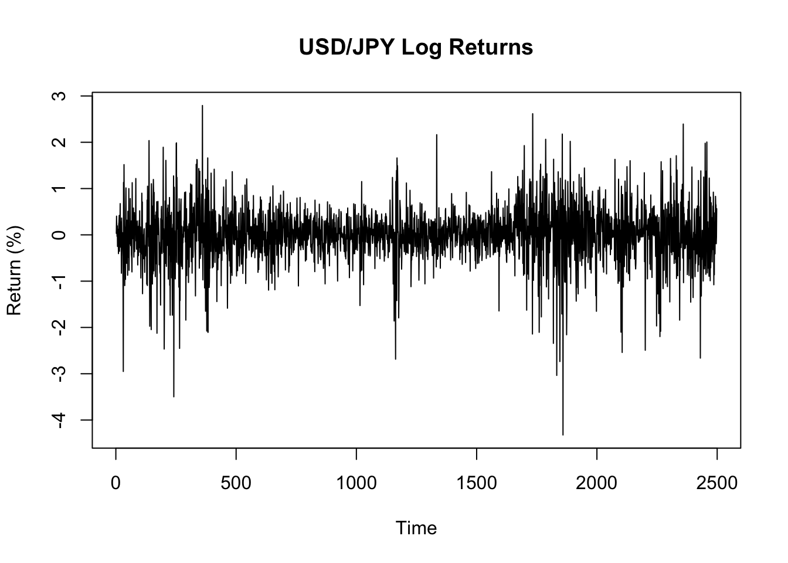
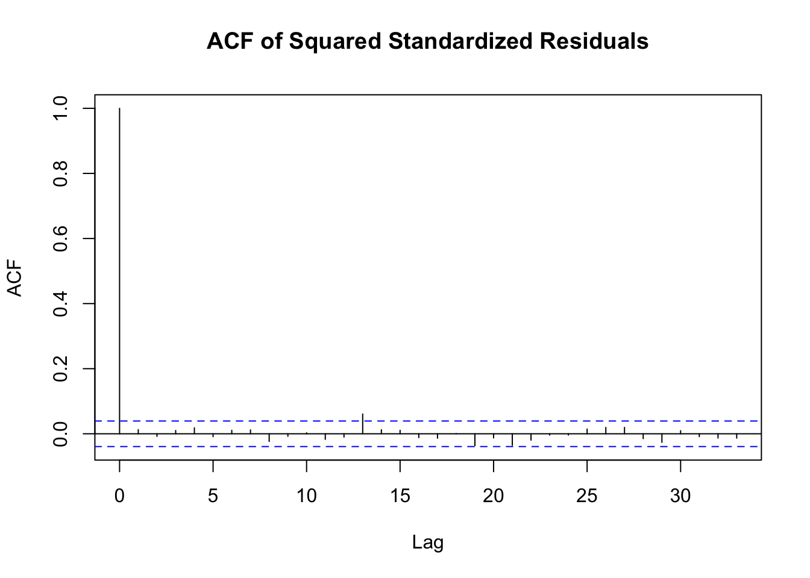
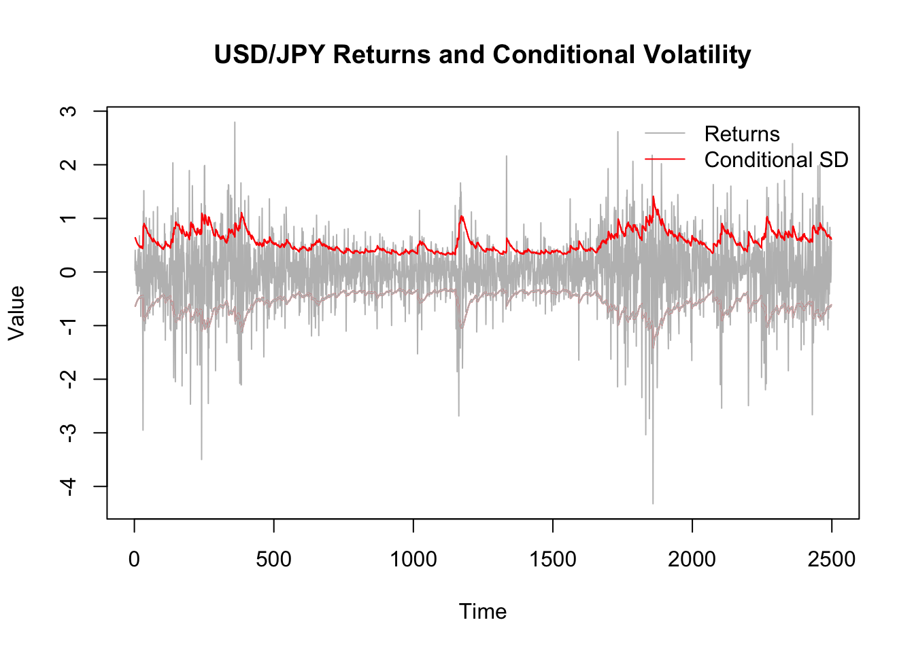

An Analysis of USD/JPY Exchange Rate Volatility (Risk)
Introduction
I have been carefully watching the exchange rate between the Japanese Yen (JPY) versus the U.S. Dollar (USD) and Canadian Dollar (CAD) since I have lived in Canada since 2022, but my financial assets have been denominated in JPY. The big problem is that the JPY has been fluctuating a lot since 2022, and it is becoming weaker now. This can be attributed to several intricate factors such as Japan’s low-interest-rate policy compared to other developed countries, its underlying economic weakness that prevents the central bank from raising its interest rate, the trade deficit, etc. Observing the exchange rate, I intuitively feel that the JPY is fluctuating, but as a science student, I want to quantify this phenomenon.
This report investigates and quantifies the volatility of the USD/JPY exchange rate, as the USD is considered the base currency in the world and is the most traded pair involving the JPY. To do this, I am going to use a GARCH (Generalized Autoregressive Conditional Heteroscedasticity) model. A secondary objective of this project is to demonstrate my knowledge of time series analysis and basic coding skills.
Data and Stylized Facts
The data used in this report is the daily USD/JPY exchange rate, sourced from the Federal Reserve Economic Data (FRED) database (Symbol: DEXJPUS). The dataset spans from July 13, 2015, to the present. You can access the data directly at: https://fred.stlouisfed.org/series/DEXJPUS.
To conduct the analysis, I first converted the daily prices into a time series of log returns. This is a standard step that transforms the non-stationary price series into a stationary one, which is a necessary condition for this type of modeling. The log return at time t is calculated as:
\[\text{Return}_t = \ln\left(\frac{\text{Price}_t}{\text{Price}_{t-1}}\right) \times 100\]
The resulting series of log returns is shown below. The plot shows volatility clustering. There are clear periods where large price changes (both positive and negative) are followed by other large changes, and periods of relative calm where changes are small.
To statistically confirm the presence of volatility clustering, I examined the autocorrelation of the returns and the squared returns. While the returns themselves show almost no serial correlation (as expected in an efficient market), the squared returns are significantly autocorrelated. This is a commonly observed financial time series and it justifies the use of a GARCH model.
A Ljung-Box test on the squared returns confirms this observation with an extremely small p-value, indicating that the variance is not constant over time.
Box-Ljung test
data: returns^2
X-squared = 185.34, df = 12, p-value < 2.2e-16GARCH(1,1) Model Estimation
Based on the evidence of volatility clustering, I specified and estimated a GARCH(1,1) model. This model is the industry standard for capturing time-varying volatility. The model estimates tomorrow’s variance based on a long-term average variance, the size of yesterday’s shock (the squared return), and yesterday’s variance forecast.
The estimated coefficients for the fitted model are shown below.
***** ESTIMATION WITH ANALYTICAL GRADIENT *****
I INITIAL X(I) D(I)
1 3.155907e-01 1.000e+00
2 5.000000e-02 1.000e+00
3 5.000000e-02 1.000e+00
IT NF F RELDF PRELDF RELDX STPPAR D*STEP NPRELDF
0 1 -8.566e+01
1 3 -1.005e+02 1.48e-01 2.95e-01 1.6e-01 3.0e+03 1.0e-01 4.37e+02
2 5 -1.026e+02 1.97e-02 3.96e-02 5.8e-02 2.3e+03 3.6e-02 7.06e+01
3 6 -1.072e+02 4.30e-02 4.07e-02 5.1e-02 2.0e+00 3.6e-02 1.90e+02
4 9 -1.295e+02 1.72e-01 1.48e-01 4.0e-01 2.0e+00 2.0e-01 1.96e+02
5 11 -1.916e+02 3.24e-01 2.51e-01 3.9e-01 2.0e+00 3.9e-01 1.57e+04
6 13 -1.999e+02 4.14e-02 7.35e-02 5.3e-02 2.0e+00 7.9e-02 2.99e+06
7 17 -2.006e+02 3.33e-03 6.82e-03 1.6e-03 4.9e+00 2.7e-03 2.10e+01
8 18 -2.012e+02 3.16e-03 3.07e-03 1.5e-03 2.0e+00 2.7e-03 1.19e+03
9 19 -2.021e+02 4.33e-03 4.82e-03 2.3e-03 2.0e+00 5.5e-03 9.08e+02
10 20 -2.025e+02 2.27e-03 5.90e-03 6.6e-03 2.0e+00 1.1e-02 2.71e+02
11 21 -2.034e+02 4.18e-03 6.17e-03 1.5e-02 2.0e+00 2.2e-02 8.80e+00
12 22 -2.050e+02 7.82e-03 3.47e-02 1.4e-02 8.3e+00 2.2e-02 8.69e+01
13 23 -2.145e+02 4.46e-02 3.89e-02 1.1e-02 2.0e+00 2.2e-02 2.65e+02
14 24 -2.168e+02 1.03e-02 4.12e-02 2.4e-02 2.0e+00 4.4e-02 3.13e+02
15 25 -2.282e+02 5.00e-02 7.84e-02 2.7e-02 2.0e+00 4.4e-02 6.35e+01
16 27 -2.300e+02 8.09e-03 1.30e-02 1.2e-02 2.0e+00 2.0e-02 1.70e+01
17 29 -2.408e+02 4.46e-02 6.15e-02 2.9e-02 3.0e+00 4.7e-02 2.04e+00
18 33 -2.416e+02 3.59e-03 1.46e-02 2.9e-03 2.3e+00 4.6e-03 9.59e+01
19 34 -2.437e+02 8.35e-03 9.11e-03 2.0e-03 2.0e+00 4.6e-03 5.33e+01
20 37 -2.516e+02 3.15e-02 3.57e-02 2.0e-02 2.0e+00 3.7e-02 5.22e+01
21 42 -2.520e+02 1.68e-03 2.90e-03 6.1e-04 3.8e+00 1.4e-03 1.79e+00
22 43 -2.524e+02 1.35e-03 1.34e-03 6.3e-04 2.3e+00 1.4e-03 9.36e-01
23 44 -2.530e+02 2.49e-03 2.44e-03 1.3e-03 2.0e+00 2.8e-03 1.01e+00
24 47 -2.565e+02 1.38e-02 1.96e-02 1.6e-02 2.0e+00 2.9e-02 1.03e+00
25 49 -2.713e+02 5.44e-02 4.77e-02 2.8e-02 0.0e+00 5.7e-02 8.01e-02
26 51 -2.754e+02 1.50e-02 4.33e-02 1.8e-02 1.9e+00 4.1e-02 6.43e-01
27 52 -2.854e+02 3.50e-02 5.06e-02 1.9e-02 1.6e+00 4.1e-02 1.91e-01
28 56 -2.878e+02 8.22e-03 1.44e-02 4.6e-04 3.2e+00 9.0e-04 3.96e-02
29 58 -2.880e+02 8.02e-04 1.40e-03 1.1e-03 1.7e+00 2.1e-03 1.13e-02
30 60 -2.881e+02 4.71e-04 7.40e-04 2.4e-03 1.4e+00 6.0e-03 2.93e-03
31 61 -2.882e+02 1.05e-05 3.17e-05 4.5e-04 0.0e+00 1.2e-03 3.17e-05
32 62 -2.882e+02 9.98e-06 1.07e-05 3.1e-05 0.0e+00 7.9e-05 1.07e-05
33 63 -2.882e+02 1.51e-07 1.78e-07 3.2e-05 4.1e-01 7.9e-05 1.85e-07
34 64 -2.882e+02 1.22e-09 2.80e-09 1.8e-06 0.0e+00 4.1e-06 2.80e-09
35 65 -2.882e+02 -7.79e-11 1.91e-11 9.0e-08 0.0e+00 2.1e-07 1.91e-11
***** RELATIVE FUNCTION CONVERGENCE *****
FUNCTION -2.881541e+02 RELDX 8.951e-08
FUNC. EVALS 65 GRAD. EVALS 35
PRELDF 1.908e-11 NPRELDF 1.908e-11
I FINAL X(I) D(I) G(I)
1 3.002419e-03 1.000e+00 -1.788e-01
2 5.475729e-02 1.000e+00 -5.202e-02
3 9.382805e-01 1.000e+00 -5.759e-02| Estimate | Std. Error | t value | Pr(>|t|) | |
|---|---|---|---|---|
| a0 | 0.0030024 | 0.0005273 | 5.693742 | 0 |
| a1 | 0.0547573 | 0.0047399 | 11.552415 | 0 |
| b1 | 0.9382805 | 0.0050377 | 186.250325 | 0 |
All three coefficients (a0, a1, b1) are highly statistically significant, as indicated by their very small p-values. The sum of the ARCH (a1) and GARCH (b1) coefficients is 0.993. This value is extremely close to 1, which implies that volatility shocks are highly persistent in the USD/JPY market. In practical terms, this means that once a period of high volatility begins, it is expected to last for a long time.
Model Diagnostics and Interpretation
After fitting the model, it is necessary to check if it has successfully captured the characteristics of the data. This is done by analyzing the model’s standardized residuals. If the model is a good fit, these residuals should have no remaining volatility clustering.

The Autocorrelation Function (ACF) of the squared standardized residuals shows no significant lags. A formal Ljung-Box test on these residuals yields a large p-value, confirming that the GARCH(1,1) model has effectively captured the time-dependent volatility.
The final plot below visualizes the model’s performance. The grey line represents the actual daily returns, while the red lines show the GARCH model’s estimate of the conditional standard deviation (the volatility).

The plot clearly shows the model’s success. During periods of large price swings, the red volatility bands widen to reflect increased market risk. In times of stability, the bands narrow. This dynamic measure of risk is the key output of the GARCH model and provides a much deeper understanding of market behavior than looking at prices alone.
Conclusion
This analysis tried to quantify the changing risk in the USD/JPY exchange rate, motivated by recent economic uncertainty. The GARCH(1,1) model has proven to be an excellent tool for this purpose.
The main results are twofold. First, the model successfully captures the volatility clustering present in the daily returns. Diagnostic checks confirm this, as the standardized residuals of the model show no remaining ARCH effects, indicating that the time-dependent volatility has been well-explained.
Box-Ljung test
data: std_residuals^2
X-squared = 5.008, df = 12, p-value = 0.9577Second, the analysis shows that volatility in the USD/JPY market is highly persistent. The sum of the ARCH and GARCH coefficients is very close to one, meaning that shocks to the market have a long-lasting effect on risk. Periods of high volatility are likely to be followed by more high volatility, and calm periods are likely to be followed by more calm.
Ultimately, this GARCH model provides a dynamic and statistically robust measure of risk that is far more insightful than simply observing price charts. It fulfills the project’s objective by transforming a general concern about currency fluctuation into a quantifiable and interpretable model of market volatility.
View the full R code for this analysis on GitHub: analysis.R